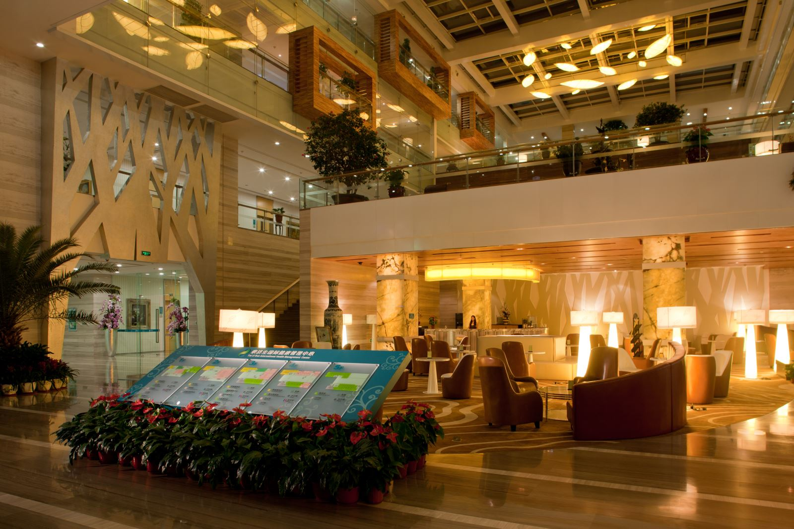
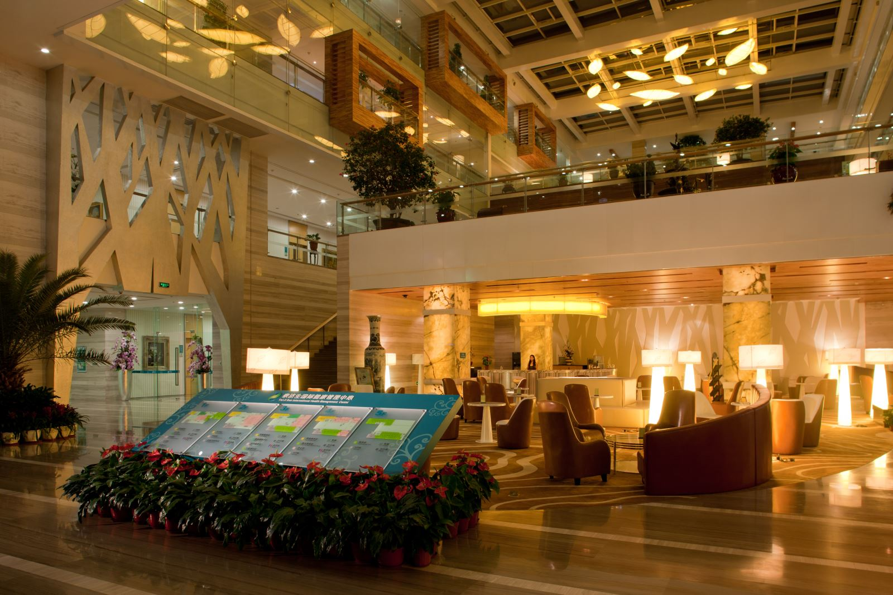

泰济生医院国际健康管理中心坐落于天狮国际健康产业园内，建筑面积2.8万平方米，是天狮集团投资兴建的国内顶级规模的健康管理机构，面向全球高端客户提供"全方位"、"一站式"、"个性化"、"高品质"的健康管理服务。

泰济生综合当今国际先进的设备、权威的专家团队、先进的服务理念和完善的服务流程，在全身肿瘤早期筛查方面形成了自己在全国乃至全球范围内"超早期""精准""系统""全面""安全"的独到特色，为癌症的预防、诊断、早期干预与治疗提供可靠依据！
在癌症早期筛查及诊断的基础上，泰济生又与美国、日本、韩国等多家世界权威的生物治疗机构形成战略合作联盟，建立抗衰老研究中心，积极引进与开展生物保健、生物美容和生物抗衰老为特色的保健项目，以期大幅提高癌症、糖尿病、心脑血管疾病、免疫系统疾病、神经系统疾病等的治愈率，已快速实现生物技术在抗衰老与美容方面的应用。


 

泰济生将在全身体检、癌症早期筛查及有效治疗方面打造一个全球高端的健康医疗管理平台。